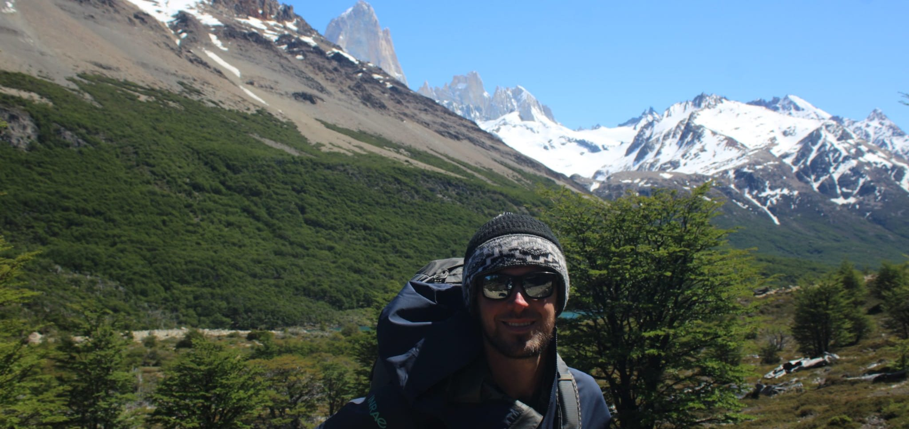

I am a research fellow at the French National Institute of Agronomic and Environmental research (INRAE), within the research unit RECOVER based in Aix-en-Provence, France. Specialized in forest ecology, my research aims at understanding how disturbances such as fire, storm or herbivory affect the dynamics and functioning of forest ecosystems. I am particularly interested in quantitative approaches involving models of forest dynamics or national forest inventories.
